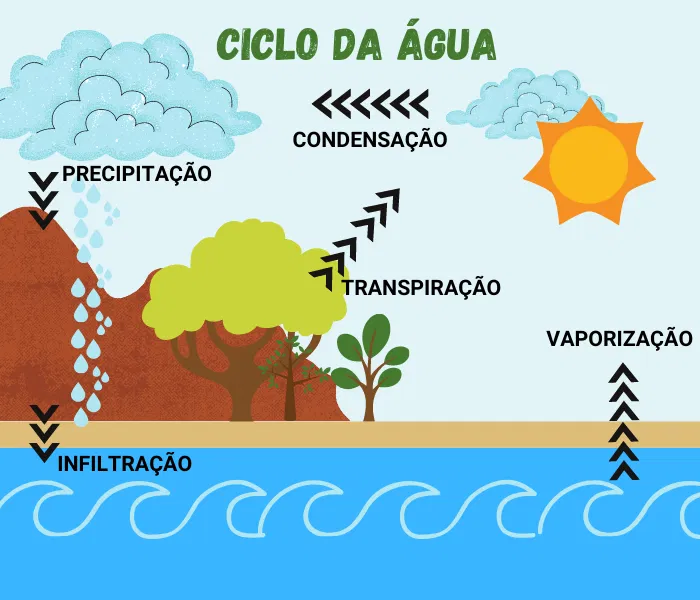
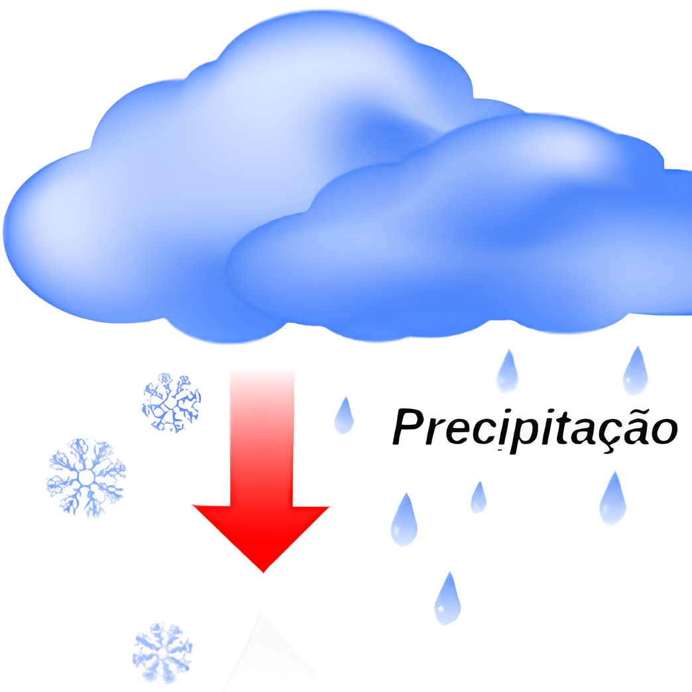
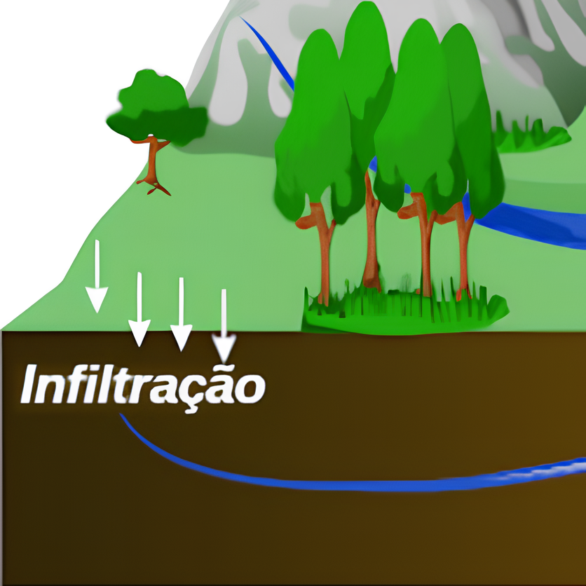
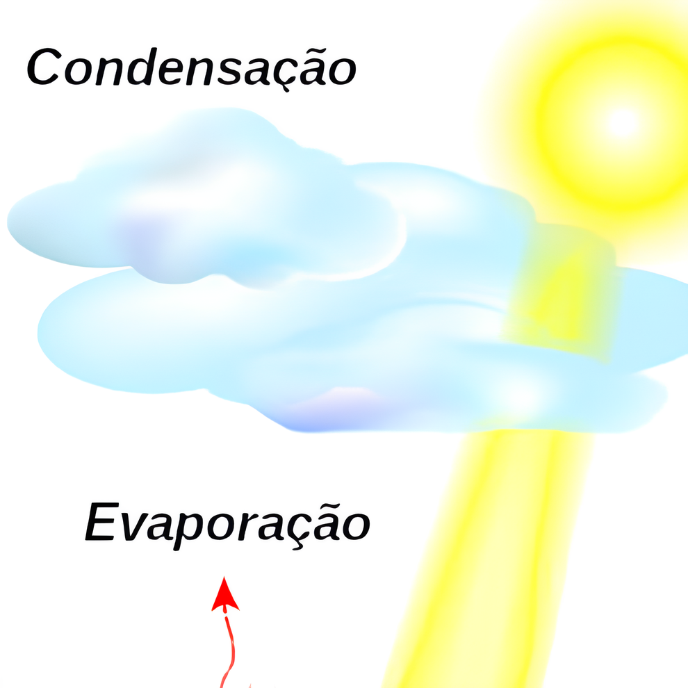
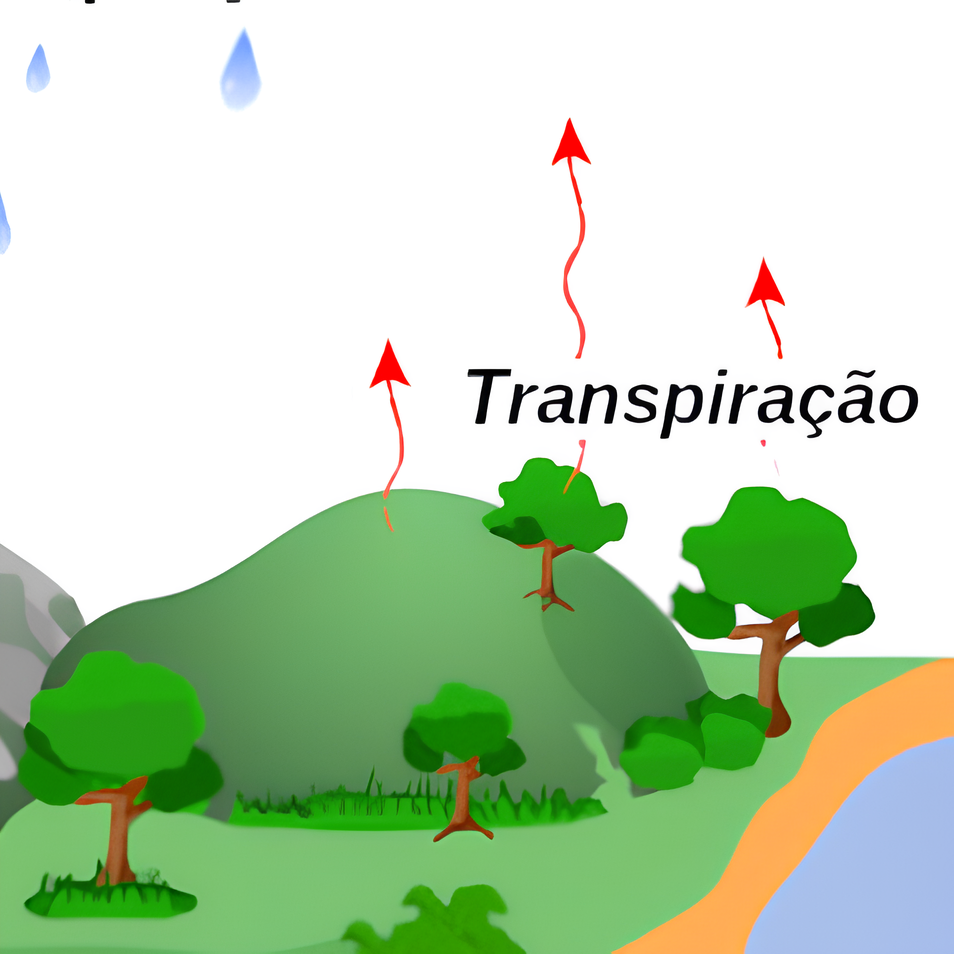
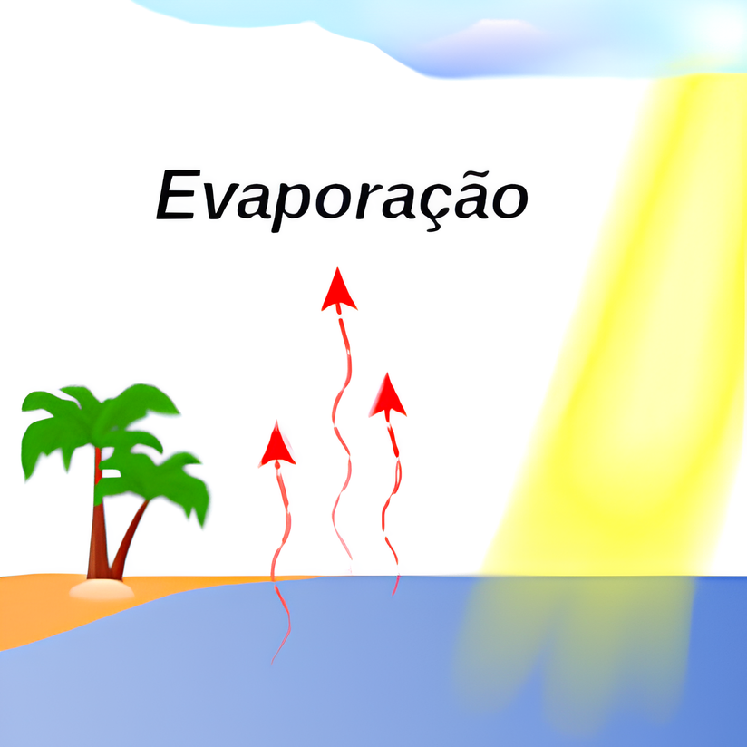

🖱️ Clique em cada etapa do ciclo da água.


A precipitação é a liberação de água pela as nuvens, mais conhecida como chuva.
Os vapores de água condensados no ar voltam para a terra por causa da mudança
de temperatura.
Quando a chuva cai, a água pode seguir diferentes caminhos dependendo de onde
ocorreu a precipitação. Ela cai diretamente nas águas, infiltra-se no solo
e em rochas. Também pode ser absorvida pelas plantas.
Além da chuva, a água também pode cair como neve ou granizo.
A água passa pelo solo por um processo chamado "Escoamento".

Quando a água que cai no solo não escoa para algum corpo d'água
ela pode ser absorvida pelo solo.
Os lençóis freáticos, reservatórios subterrâneos de água, são formados pela
infiltração no solo acima de camadas rochosas profundas que não permitem a passagem de água.

Quando o vapor de água chega à atmosfera ocorre a condensação, ou seja,
retorno para o estado líquido.
A formação das nuvens ocorre pela aproximação das gotículas de água, pois em
elevadas altitudes a temperatura é menor. Além disso, as gotículas são tão
pequenas que conseguem flutuar no ar e formam a neblina.
As nuvens são o principal meio para a água retornar para a superfície terrestre.
Quando as gotas de água se juntam, tornando-se maiores e mais pesadas, elas caem como chuva.

A água absorvida pelo solo é aproveitada pelas plantas entrando pelas raízes.
Assim como a evaporação, a transpiração é a transformação de água líquida em vapor de água
e também participa da umidade do ar.
A água sai das plantas pelas folhas, que possuem aberturas muito pequenas e liberam
a água excedente, já que é nessa parte da planta que a água é direcionada para participar
da fotossíntese.
A combinação das etapas de evaporação e transpiração recebe o nome de evapotranspiração
e é responsável pelo movimento de água superficial para a atmosfera.

A primeira etapa do ciclo da água é a evaporação, ou vaporização.
Nela, a água muda do estado líquido para o gasoso.
A água da hidrosfera, sendo os oceanos a principal fonte, passa para a atmosfera
ao absorver energia térmica proveniente do sol e mudar para o estado gasoso,
sendo a principal fonte de umidade na atmosfera.
A evaporação da água é influenciada pela temperatura e radiação solar,
que é lançada para atmosfera ao atingir energia cinética suficiente.
Assista a video-aula ao lado para entender tudo sobre o ciclo da água!
Se tiver dúvidas, chame o(a) professor(a)!